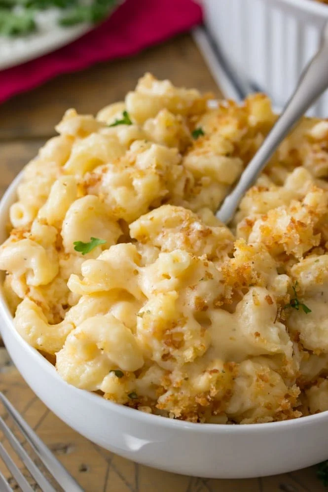

Baked Mac and Cheese

Description
This is my absolute favorite recipe for baked mac and cheese. Credit to
Sugar Spun Run
for the recipe.
Ingredients
- 8 oz dry macaroni noodles
- 4 Tablespoons butter
- 1/4 cup all-purpose flour
- 3 cups whole milk
- 1/2 teaspoon salt
- 1/2 teaspoon ground pepper
- 1/2 teaspoon garlic powder
- 1/2 teaspoon onion powder
- 1/2 teaspoon ground mustard
- 2 cups shredded sharp chedder cheese
- 1 1/2 cup shredded mozzarella cheese
- 2 Tablespoons butter
- 1 Tablesppn olive oil
- 1 cup seasoned panko crumbs
Directions
-
Preheat oven to 350F.
-
Begin Cooking your pasta according to package instructions. Do not over-cook, in fact, for best results cook
one
minute less than indicated time. Once finished, drain, drizzle with a tiny bit of olive oil and toss to coat
so the
noodles don't stick together while sitting.
-
Meanwhile, melt butter in a cast iron pan over medium heat. once it has melted, add flour and whisk
until smooth and no lumps remain.
-
Add milk and spices, stir well and bring to a boil.
You may notice that the milk and butter will seperate -- continue to heat, stirring frequintly, until the
milk is heated and they combine.
-
Once mixture comes to a boil, reduce heat, bring to a simmer, and stir frequently until mixture
is thickened.
-
Reduce heat to low and add cheddar and mozzarella cheese. Stir until cheeses are melted and
mixture is smooth.
-
Add cooked, drained pasta noodles and stir until well oated by the sauce.
-
Set aside while you prepare your Panko topping
-
Combine butter and olive oil in a small saucepan over medium heat. Heat, stirring occasionally, until
melted.
-
Add panko and stir well until the butter and oil has been mostly absorbed. Continue to stir
until panko is lightly toasted and turns a light-medium brown color.
-
Sprinkle toasted panko evenly over mac and cheese.
-
Transfer to oven and bake uncovered on 350F for 15 minutes.
-
Garnish with parsley, if desired, and serve.